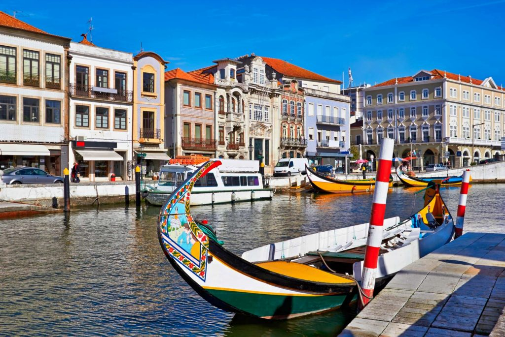

Aveiro
| Aveiro é uma cidade na costa oeste portuguesa fundada junto a uma laguna conhecida como Ria de Aveiro. Distingue-se pelos seus canais navegados por barcos coloridos (barcos moliceiros), tradicionalmente utilizados para a colheita de algas. Não muito longe do centro, conhecida pelos edifícios de estilo art nouveau, encontra-se a Sé de Aveiro, com o seu proeminente campanário. O Museu de Aveiro, situado num antigo convento, possui um túmulo extravagante fabricado em mármore. |  |